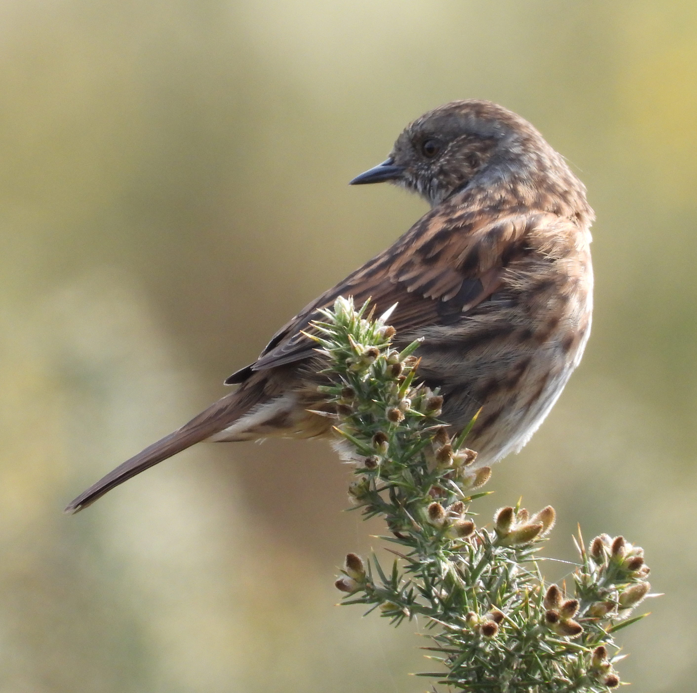

- Barn owl (December 17, 2022),
- Jackdaw (often),
- Sparrowhawk (from time to time; easily confused with a kestrel, especially when seen from below).
Blackbird
When: All year.
Where: Hedges, gardens (picking up worms from a lawn), cotoneaster, buddleia and alder, gorse.
Frequency: Several seen every day. The leucistic one seen just once (Dec 3, 2022).

{kind=link}

Blue tit
When: All year.
Where: Gardens, cotoneaster, whitebeam (border with the golf course), alder, buddleia.
Frequency: Rarely seen in winter, almost every day in summer.

Buzzard
When: All year.
Where: On the skies above, sometimes on the top of the spruces.
Frequency: Very rare.

Chaffinch
When: All year.
Where: Mostly woodland, on spruces and whitebeam.
Frequency: Every day, except winter when it is quite rare.

Dunnock
When: All year.
Where: Hedges, cotoneaster.
Frequency: Irregular. Seen mostly in autumn and winter. Needs more observation.

{kind=link}
Geese
When: Spring and autumn.
Where: On the skies while they are migrating or preparing for the migration.
Frequency: Almost every day during their migration time.

Goldcrest
When: Winter.
Where: Gorse.
Frequency: Seen on two occasions on December 28-29, 2022.

Goldfinch
When: Summer, autumn.
Where: In the woodland. In September, flocks of goldfinches feed on the cones of the spruces.
Frequency: Every day.


Great tit
When: All year.
Where: Hedges, cotoneaster, alder, buddleia, whitebeam.
Frequency: Every day in summer, seldom in winter. However, can be heard on warmer and sunnier days of January.

Kestrel
When: All year.
Where: On the skies or on spruces.
Frequency: Rare. Once a week.

Magpie
When:
All year. Where: On the spruces and the grassland nearby the woodland, all other trees and grass in the area.
Frequency: Every day.


Pheasant
When: All year.
Where: Woodland and the adjacent grass.
Frequency: Occasional visitor from the golf course.

Pigeon
When: All year.
Where: Spruces, nearby grass and the skies.
Frequency: Every day.
{kind=link}
Redwing (near threatened)
When: Winter. Large flocks come from Norway in December.
Where: Woodland, grass and nearby trees.
Frequency: When they visit the moor, they are seen in large numbers every day.


Robin
When: All year.
Where: Gorse and all nearby bushes and hedges.
Frequency: Every day.


Rook
When: All year.
Where: Woodland, other trees and grasses.
Frequency: Every day.

Seagull
When: All year.
Where: On the skies and the roofs of nearby buildings.
Frequency: Every day.

Song Thrush
When: All year.
Where: Cotoneaster, hedges, alder, buddleia, grass.
Frequency: Almost every day.


Sparrow
When: All year.
Where: Hedges, cotoneaster.
Frequency: Every day.

Stonechat
When: October.
Where: Gorse.
Frequency: Seen once on October 18, 2022.


Treecreeper
When: September.
Where: Woodland.
Frequency: I saw it twice (September 22 and 29, 2022). Probably just a visitor.


Water rail
When: Autumn.
Where: Gorse.
Frequency: Seen once on November 26, 2022.

Whitethroat
When: June.
Where: Gorse.
Frequency: Seen once on June 25, 2022.

Wren
When: All year.
Where: Gorse.
Frequency: Every day.


Yellowhammer
When: August.
Where: Cotoneaster.
Frequency: Seen once on August 3, 2022.